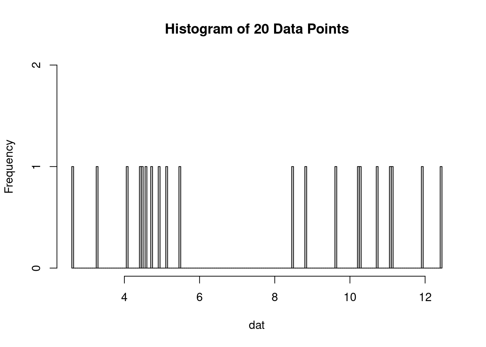

EFI_2025_Workshop
1 About this tutorial
1.1 Learning objectives
- Overview of the Post Fire Recovery - MODIS LAI#to do replace with actual forecast link theme for the NEON Ecological Forecast Challenge
- How to download the necessary data from Planentary Computer
- How to create a simple forecast for the Post Fire Recovery theme
- How to submit/score a forecast to evaluate its accuracy
1.2 Target user groups for this tutorial
This tutorial is intended to be used by ecological forecasters at any stage of expertise and may be used as a learning tool as an introduction to forecasting properties of ecological processes spatially and temporally. Below, we provide code for introductory examples to walk through the entire process of creating and submitting a forecast to the Ecological Forecasting challenge. This includes:
- Accessing target datasets of MODIS LAI.
- Accessing climate forecast data to use as drivers in models predicting LAI recovery post fire.
- How to create models for raster data.
- How to submit a forecast to the forecast challenge
Upon completing this tutorial, participants should be able to create and submit forecasts to the MODIS LAI Post Fire Recovery theme of the EFI RCN NEON Ecological Forecasting challenge.
1.3 Things you will need to complete this tutorial
You will need a current version of R (v4.2 or newer) to complete this tutorial. We also recommend the RStudio IDE to work with R.
To complete the workshop via this markdown document the following packages will need to be installed:
tidyverselubridatetsibblestarsgdalcubesrstacterrascoringRulesforecastnimblespatstat.sparseassertthatminioclientpurrrremotes(to install neon4cast from gitHub)neon4cast(from github)
The following code chunk should be run to install packages.
install.packages('tidyverse') # collection of R packages for data manipulation, analysis, and visualisation
install.packages('lubridate') # working with dates and times
install.packages('tsibble') # working with timeseries data
install.packages('fable') # running forecasts
install.packages('fabletools') # helper functions for using fable
install.packages('remotes')
install.packages('tsibble') # package for dealing with time series data sets and tsibble objects
remotes::install_github('eco4cast/neon4cast') # package from NEON4cast challenge organisers to assist with forecast building and submission
remotes::install_github("eco4cast/score4cast") # package to score forecastsThen load the packages.
version$version.string## [1] "R version 4.3.1 (2023-06-16 ucrt)"library(tidyverse)
library(lubridate)
library(tsibble)
library(fable)
library(fabletools)
library(neon4cast)
library(score4cast)2 Introduction
2.1 The NEON Ecological Forecast Challenge
The Challenge has been organized by the Ecological Forecasting Initiative Research Coordination Network (EFI RCN).
The Challenge asks the scientific community to produce ecological forecasts of future observations of ecological data that will be collected and published by the National Ecological Observatory Network (NEON). The Challenge is split into five themes that span aquatic and terrestrial systems, and population, community, and ecosystem processes across a broad range of ecoregions. We are excited to use this Challenge to learn more about the predictability of ecological processes by forecasting NEON data before it is collected.
Which modeling frameworks, mechanistic processes, and statistical approaches best capture community, population, and ecosystem dynamics? These questions are answerable by a community generating a diverse array of forecasts. The Challenge is open to any individual or team from anywhere around the world that wants to submit forecasts. Learn more about how you can participate here..
2.2 Goals for forecasts of post fire recovery
2.3 Overview of the MODIS LAI Post Fire Recovery theme
What: Forecast abundance and/or richness of ground beetles (carabids) collected in pitfall traps, standardized to sampling effort (trap night). More information about the NEON data product (DP1.10022.001, Ground beetles sampled from pitfall traps) we are forecasting can be found here. Note that we are not downloading the target dataset from the NEON data portal. Rather, we will download a version of the dataset that has been simplified and preformatted for this challenge by the EFI RCN. Specifically, the targets are:
abundance: Total number of carabid individuals per trap-night, estimated each week of the year at each NEON siterichness: Total number of unique ‘species’ in a sampling bout for each NEON site each week.
Where: 3 Fires Fire Database.
When:
3 Forecasting MODIS LAI Recovery Post Fire
3.1 Define spatial and temporal parameters for our forecast
3.2 Read in the data
3.3 Visualise the target data
3.4 Create the training dataset
3.5 Example forecasts: some simple models
The main branch currently has two baseline models implemented. These models are intended to provide a benchmark for evaluating the performance of more complex models. The two baseline models that are currently implemented are:
- A spatial climatology ensemble model
- A grid ARIMA parametric model
We also have two baseline models in the development and debugging stage: - A spatial-temporal ICAR random walk - A spatial Gaussian Process
For now, the first two models that we have implemented will provide reasonable competitors to the models developed by challenge participants, and in the context of this workshop will provide a nice demonstration of the difference between parametric and ensemble models and how they are scored.
3.5.1 Forecast MODIS LAI post fire: Local Climatology Model
The first baseline model is a local climatology model. Not to be confused with a climate model (which many participants may be familiar with), the purpose of a climatology model is to use historical data to build a forecast distribution.
The local part of the climatology model comes into play when we consider exactly what historical data is used to create the forecast distribution. As an example, suppose that we have ten years of daily temperature data for the entire state of Virginia. If our end goal is to create a forecast distribution for the temperature in Blacksburg, we may only want to consider the historical data from Montgomery County instead of the entire state. Indeed, the term local refers to the fact that we are only considering points that are, in some broad sense, close to our target in space or time.
In the context of generating baseline forecasts for post-fire LAI recovery, we have data from MODIS dating back to 2002 that comes in roughly every 8 days. Rather than using the entire dataset, we consider only LAI measurements that occur in the month of interest. This gives us a snapshot of historical data within a given month so that we can build an informed forecast distribution for how we would expect our process to behave. For example, if we are interested in forecasting the LAI at the Soaproot Saddle NEON site for May 2025, the local climatology model will include LAI measurements from May 2002, May 2003, etc all the way until May 2024.
A natural follow-up question: once we have identified the data, we want a baseline model. So what exactly is the statistical model that we are using here?
In fact these singleton data points are our statistical model, at least after a little bit of work. We put some little densities around them (sometimes called “kernel dressing” in the literature) and these little densities come together to turn these singleton points into a forecast distribution. Taking our example from above, this process yields the following:
plot(density(dat))By choosing to “fit” a non-parametric model to our data we get some additional flexibility, since we don’t have to conform to some particular pre-specified probability distribution. For example, if we were to just take a mean and standard deviation of the above data and treat it as a univariate Normal distribution we would be missing out on the fact that our data is actually bimodal with two areas of high density.
In many situations, the climatology or local climatology models perform surprisingly well. To paraphrase Benjamin Franklin: “death, taxes, and losing to the climatology”. Post fire LAI recovery presents an interesting challenge for historical climatology data however: sites that not previously had a fire during the MODIS period from 2002 to present may not adequately capture the behavior of LAI during post fire-recovery.
Now, for the interesting part, a demonstration of how to fit the climatology model! The function spat_climatology() builds a climatology forecast using historical data for a given month, and stores an ensemble of geotiff files. In the event that there are missing historical data for a given month, missing values are imputed using a simple bootstrap re-sample of previous values within a pixel (using the internal na_bootstrap() function). For cyberinfrastructure pipeline purposes, spat_climatology returns the directory that ensemble forecasts were written to.
── Attaching core tidyverse packages ──────────────────────── tidyverse 2.0.0 ──
✔ dplyr 1.1.4 ✔ readr 2.1.5
✔ forcats 1.0.0 ✔ stringr 1.5.1
✔ ggplot2 3.5.1 ✔ tibble 3.2.1
✔ lubridate 1.9.3 ✔ tidyr 1.3.1
✔ purrr 1.0.2
── Conflicts ────────────────────────────────────────── tidyverse_conflicts() ──
✖ dplyr::filter() masks stats::filter()
✖ dplyr::lag() masks stats::lag()
ℹ Use the conflicted package (<http://conflicted.r-lib.org/>) to force all conflicts to become errorsfire_box <- fire_bbox(fire = "august_complex", pad_box = TRUE, dir = '../shp')# Ingest data ------------------------------------------------------------
gdalcubes::gdalcubes_options(parallel=TRUE)
# use ingest_planetary_data function to extract raster cube for fire bounding box between Jan 1 2002 and July 1 2023.
raster_cube <- ingest_planetary_data(start_date = "2002-01-01",
end_date = "2025-03-01",
box = fire_box$bbox,
srs = "EPSG:4326",
dx = 0.1,
dy = 0.1,
dt = "P30D",
collection = "modis-15A2H-061",
asset_name = "Lai_500m")
# create target file
date <- '2023-06-01'
target <- create_target_file(cuberast = raster_cube,
date = date,
dir = "/vsis3/spat4cast-targets",
mask = fire_box$maskLayer)# Forecast ----------------------------------------------------------------
ensemble_forecast_dir <- spat_climatology(cuberast = raster_cube,
date = '2023-06-01',
dir = 'climatology')
ensemble_forecast_dir |>
spat4cast_submit()3.5.2 Forecast MODIS LAI post fire: gridded ARIMA model
The Grid ARIMA baseline model considers each grid cell in the fire polygon
It is likely that grid cells that are close to each other exhibit spatial autocorrelation, and thus it is foolish to throw away that valuable information by treating each grid cell as independent. However, yada yada talk about other two models and explain that this one is meant to be simple.
Does this forecast seem reasonable?
3.6 How to submit a forecast to the NEON Forecast Challenge
4 Evaluating your forecast
4.1 How your submission will be scored
4.2 How to score your own forecast
- Which model(s) did best?
- What might explain the differences in scores between the different models?
4.3 Improving your forecasts: Incorporating additional data
An obvious choice for improving on the baseline models presented here is to incorporate covariate information into our forecasts of LAI. Three of our focal fires occurred at NEON sites. This means that we have access to a wealth of covariate information, if we are able to access it and process it! In this section, we provide example code that uses the neonstore package to pull and aggregate NEON data for:
- Temperature (daily minimum and maximum temperature)
- Incoming shortwave radiation (daily)
- Relative humidity (daily)
In order to avoid any potential package and dependecy related issues with the installation of neonstore, we provide all of the example data from this section in a .csv file format on the bucket, so that participants can immediately jump into model building. This process can be roughly broken down into four steps:
- Identifying your site of interest
- Finding a data product for your covariate of interest
- Aggregating data to the desired time scale
- (Optional) Imputing missing data
## set site to desired NEON site
## here we will use SOAP, but the other focal
## sites can be used (GRSM or SRER)
site <- 'SOAP'The second step is to find a data product that contains your covariate of interest. While these seems like it may be a daunting task, thanks to NEON’s wonderful data portal (found here: https://data.neonscience.org/) it is not difficult at all. Searching “air temperature” in the data portal search bar gives us multiple options: we will go with Triple Aspirated Air Temperature (DP1.00003.001).
## air temp data product
air_temp_dp <- 'DP1.00003.001'
## use neonstore package "neon_download" function to pull data product
## for triple aspirated air temperature
neon_download(product = air_temp_dp, site = site)
## read the 30 minute measurements into temp_table
temp_table <- neon_read("TAAT_30min-basic", site = site)
## create table of minimum and maximum temps
temp_info <- temp_table %>%
## use lubridate to extract date format
mutate(Date = as_date(endDateTime)) %>%
## group_by date to get daily mins/maxs
group_by(Date) %>%
## compute minimums and maximums
summarize(MinT_daily = min(tempTripleMinimum, na.rm = TRUE),
MaxT_daily = max(tempTripleMaximum, na.rm = TRUE)) %>%
## change infinite values to NAs for interpolation
mutate_if(is.numeric, ~
replace(., is.infinite(.), NA))
## interpolate missing temperature values using a kalman filter
temp_info$MinTInterp <- na_kalman(temp_info$MinT_daily)
temp_info$MaxTInterp <- na_kalman(temp_info$MaxT_daily)5 What’s next?
- The forecasts we created here were relatively simple. What are ideas you have to improve the forecasts?
- How could you expand on this forecasting exercise? More fires? Different forecast horizons?
- How could you apply what you have learned here in your research or teaching?